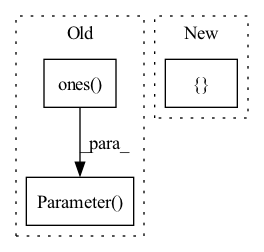

Pattern ID :1011

Before Change
torch.ones(hidden_channels * 3, input_channels, kernel_size),
requires_grad=True,
)
self.weight_hh = nn.Parameter(
torch.ones(hidden_channels * 3, input_channels, recurrent_kernel_size),
requires_grad=True,
)
self.bias_ih = nn.Parameter(torch.zeros(hidden_channels * 3), requires_grad=True)
self.bias_hh = nn.Parameter(torch.zeros(hidden_channels * 3), requires_grad=True)
// ----------------------------------------------------------------------
self.reset_parameters()
After Change
self.hidden_dim = hidden_dim
self.kernel_size = (
kernel_size if isinstance(kernel_size, (tuple, list)) else [kernel_size] * 2
)
self.padding = self.kernel_size[0] // 2, self.kernel_size[1] // 2
self.bias = bias
In pattern: SUPERPATTERN
Frequency: 3
Non-data size: 3
Instances
Fragment ID: 2063103
Project Name: openclimatefix/skillful_nowcasting
Commit Name: 02c5ceadd01484d6ac8bce848ff76446fe7a6917
Time: 2021-10-18
Author: jacob@bieker.tech
File Name: nowcasting_gan/layers/ConvGRU.py
Class Name: ConvGRU1DCell
Method Name: __init__
Parent Class: nn.Module
Fragment ID: 2063101
Project Name: tyleryep/torchinfo
Commit Name: 1737da35bb1b69bd18b2c180d6d54f367fd0de9c
Time: 2021-06-12
Author: tyep@cs.stanford.edu
File Name: fixtures/models.py
Class Name: CustomModule
Method Name: __init__
Parent Class: nn.Module
Fragment ID: 2063106
Project Name: zhangming8/yolox-pytorch
Commit Name: e162fc0465b1f5d8b3211cdc81fd8eabb6dd55c7
Time: 2021-07-26
Author: zhangming8@github.com
File Name: models/losses/yolox_loss.py
Class Name: YOLOXLoss
Method Name: __init__
Parent Class: nn.Module